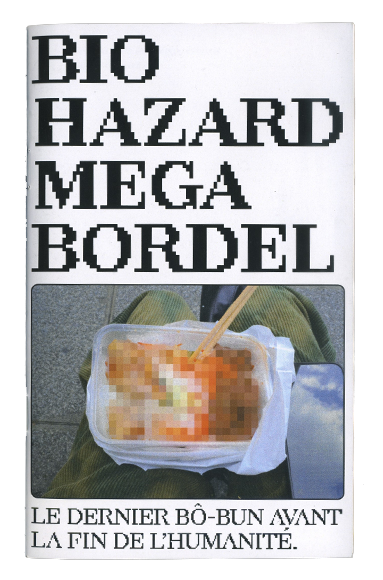
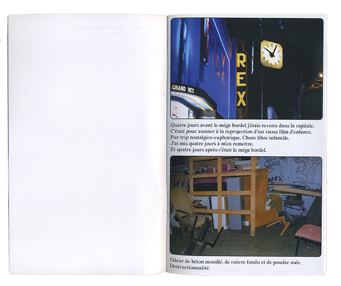
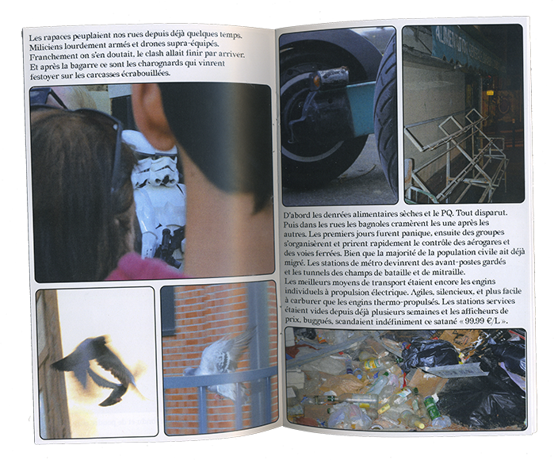
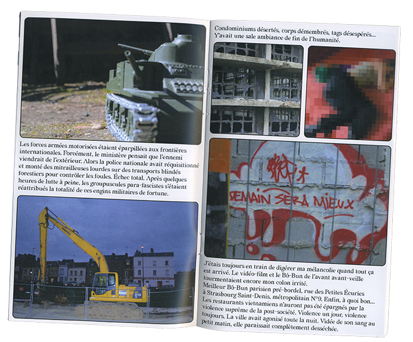
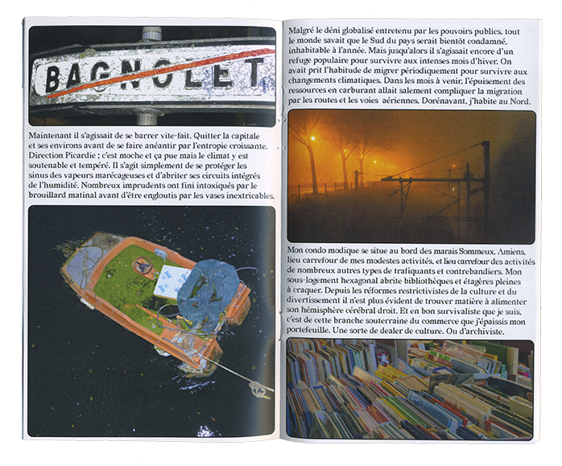
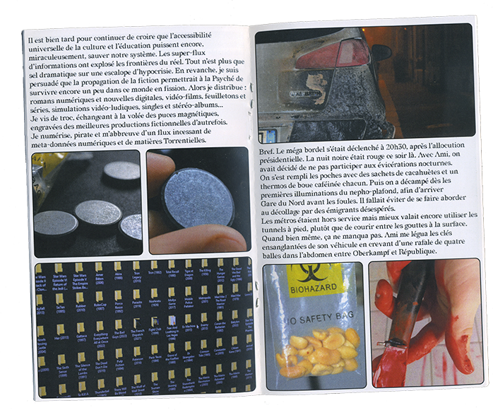
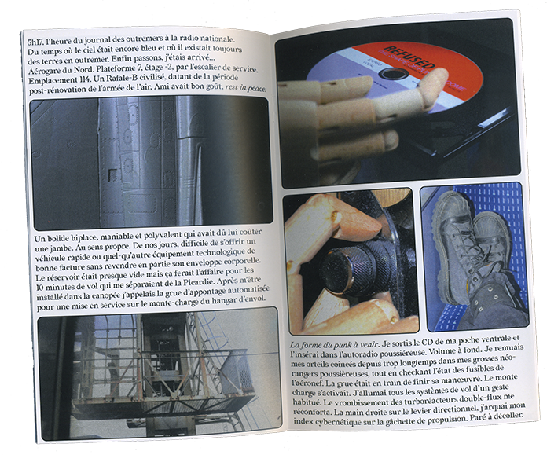
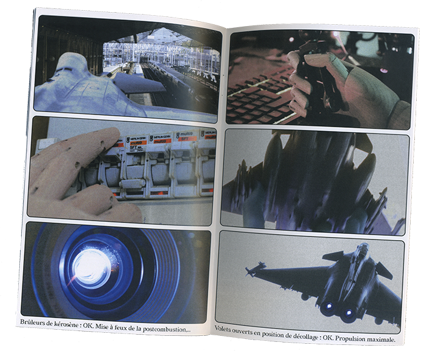
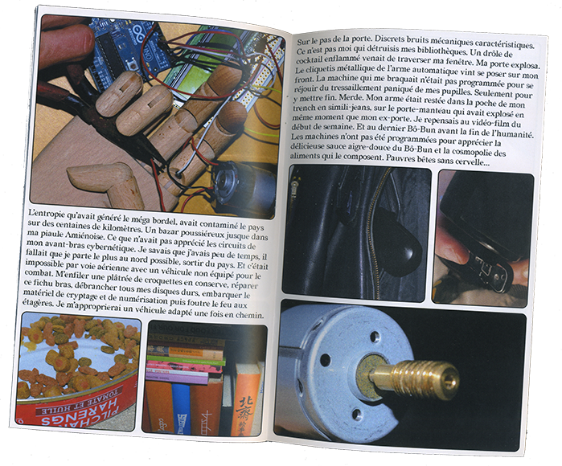
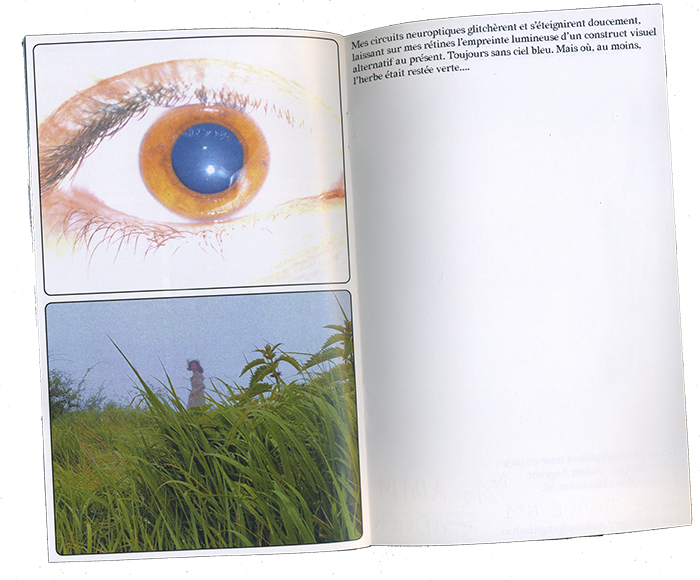

BIO HAZARD MEGA BORDEL
"Quatre jours avant le méga bordel j’étais revenu dans la capitale.
C’était pour assister à la reprojection d’un vieux film d’enfance.
Pur trip nostalgico-euphorique. Chute libre infantile.
J’ai mis quatre jours à m’en remettre.
Et quatre jours après c’était le méga bordel...."
Photographic novel, anticipation science-fiction.
First narrative text written by Adam Badger.
20 pages, 11x18cm, 39 pieces.









